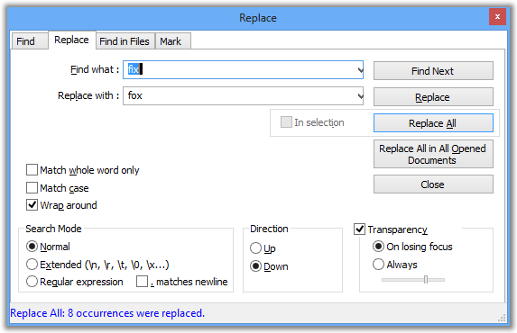

Texto original
Sugiere una traducción mejor
| Anterior: búsqueda normal | Buscar | Siguiente: Buscar archivos |

El cuadro de diálogo Reemplazar es un complemento del cuadro de diálogo Buscar. Las mismas reglas están en vigencia, pero además, reemplazas el texto encontrado con otro texto; un texto puede ser reemplazado por la cadena vacía que se eliminará.
El cambio más importante es que una nueva casilla de verificación En Selección se aplica a la que reemplazará todas las apariciones de la búsqueda con el texto de reemplazo. realizará un Reemplazar en todos los documentos que estén abiertos actualmente en Notepad ++ .
Para reemplazar todos los archivos en un directorio, vea Buscar archivos .